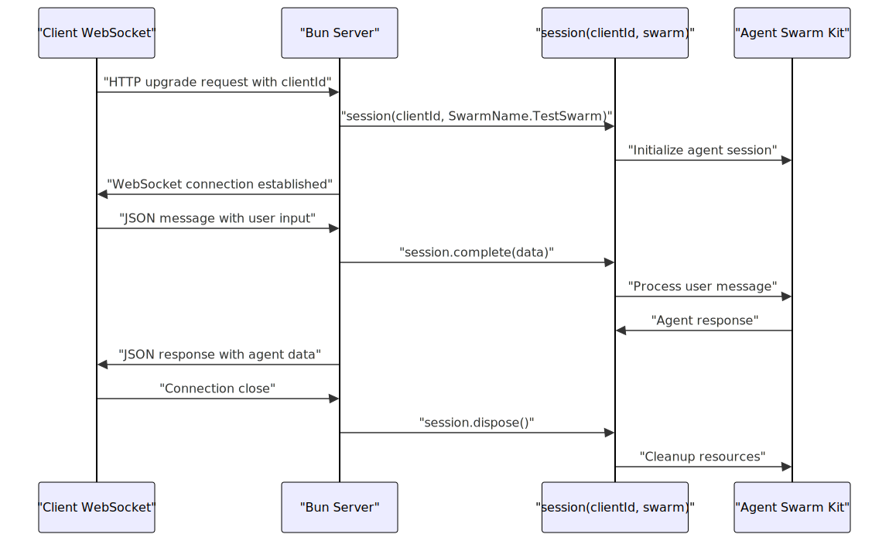

This page demonstrates real-world applications built with the agent-swarm-kit framework. The examples showcase different integration patterns, from simple WebSocket-based chat systems to complex multi-agent workflows. These examples serve as practical templates for building agent-based applications.
For information about the core framework concepts, see Core Components. For implementation guidance, see Usage Patterns.
The agent-swarm-kit repository contains multiple demonstration applications that illustrate different use cases and integration patterns:
| Example | Description | Key Features |
|---|---|---|
| client-server-chat | WebSocket-based real-time chat | Session management, real-time communication |
| binance-candle-chat | Cryptocurrency trading system | Multi-agent coordination, financial data processing |
| it-consulting-swarm | IT consulting chatbot | Agent routing, specialized knowledge domains |
| whisper-voice-chat | Voice-based interaction | Speech recognition, audio processing |
| redis-persist-chat | Persistent chat with Redis | State persistence, conversation history |
| telegram-ollama-chat | Telegram bot integration | Third-party platform integration |
| nginx-balancer-chat | Load-balanced chat system | Scalability, load distribution |
The client-server chat example demonstrates a complete WebSocket-based real-time chat application using the agent-swarm-kit framework. This example showcases session management, real-time bidirectional communication, and proper resource cleanup.

The server implementation uses Bun's WebSocket capabilities to handle real-time communication:

The server creates sessions using the session() function from agent-swarm-kit, which manages the agent lifecycle and handles message processing through the complete() method.
The client implementation demonstrates how to build a terminal-based interface that communicates with the agent system:

The client uses the Subject pattern from functools-kit to handle asynchronous message flows and implements a readline interface for user interaction.
The example demonstrates proper session lifecycle management:
| Lifecycle Stage | Server Code | Framework Integration |
|---|---|---|
| Session Creation | session(clientId, SwarmName.TestSwarm) |
Initializes agent context and resources |
| Message Processing | session.complete(data) |
Routes message through agent pipeline |
| Agent Identification | getAgentName(clientId) |
Retrieves current active agent name |
| Resource Cleanup | session.dispose() |
Cleans up session state and connections |
The server stores session data in the WebSocket data object, ensuring each connection maintains its own isolated agent context.
The client-server-chat example follows a standard structure:

The example provides separate scripts for running the client and server components:
bun run start:server - Starts the WebSocket server on port 1337bun run start:client - Starts the terminal client interfacebun run build:docs - Generates documentationThe server listens on 0.0.0.0:1337 and accepts WebSocket connections with a clientId query parameter.
The framework documentation references several additional examples that demonstrate different aspects of agent-swarm-kit:
The binance-candle-chat example implements a cryptocurrency trading system with specialized agents for different cryptocurrencies (BTC, ETH, BNB, XRP, SOL). It features a triage agent that routes requests to appropriate trading agents, demonstrating multi-agent coordination and financial data processing.
The whisper-voice-chat example showcases voice-based interaction using Whisper for real-time transcription and Nemotron Mini for natural language processing, demonstrating integration with speech recognition systems.
The redis-persist-chat example demonstrates persistent conversation history and state management using Redis, showing how to maintain long-term agent memory across sessions.
The telegram-ollama-chat example illustrates integration with third-party platforms, specifically Telegram, while using Ollama for local AI model hosting.
These examples demonstrate several key integration patterns:
session() for persistent agent interactionsEach example serves as a template for building similar applications with the agent-swarm-kit framework.